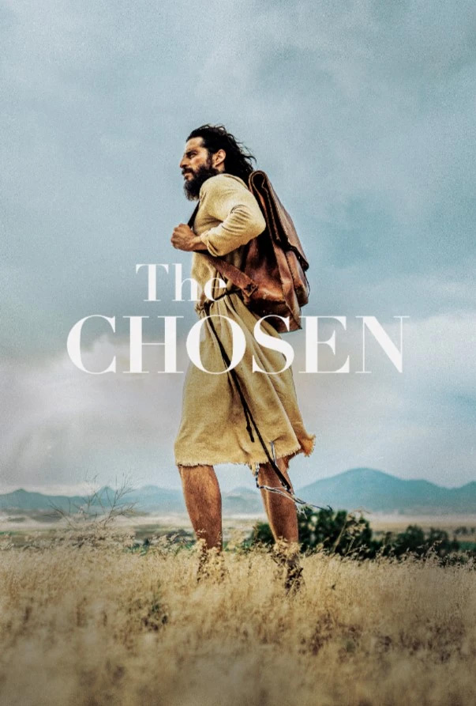

Sinopsis
The Chosen es un innovador drama histórico basado en la vida de Jesús (Jonathan Roumie), visto a través de los ojos de quienes lo conocieron. Ambientada en el contexto de la opresión romana en Israel del siglo I, esta serie de siete temporadas ofrece una mirada auténtica e íntima a la vida y enseñanzas revolucionarias de Jesús. Lo que comenzó como un proyecto financiado por la comunidad ha crecido hasta alcanzar más de 250 millones de espectadores y más de 17 millones de seguidores en redes sociales. Cada temporada te llevará a un viaje de fe, humanidad y esperanza que conecta con el corazón.
Reparto
- Jonathan Roumie, Shahar Isaac, Elizabeth Tabish
Detalles técnicos
- Gènero: Drama | Historia | Religión | Biblia
- Director : Dallas Jenkins
- Guion: Dallas Jenkins, Ryan Swanson, Tyler Thompson
- Año: 2017
- Duraciòn: Varía según la temporada y el episodio